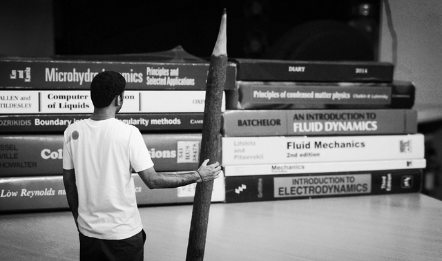

Blog
Code
Photography
Publications
Talks
SPIRES
About
Deeptak Biswas is a Project Associate I at
Publications
with Professor Rajarshi Ray
at the Department of Applied Mathematics and Theoretical Physics, University of Cambridge. His research is in the area of soft condensed matter physics. Rajesh is interested in the hydrodynamic and phoretic interactions of colloidal particles, continuum theories of soft matter, and the Bayesian inference of stochastic processes.
Education
2012-18
PhD, The Institute of Mathematical Sciences, Chennai
2012-14
MSc, St. Xaviers's College, Calcutta University, Kolkata
2009-12
BSc, St. Xaviers's College, Calcutta University, Kolkata
Contact
Email: deeptakb@gmail.com
Adapted from the minimal theme by
orderedlist